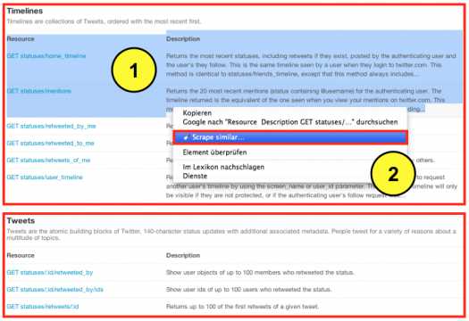
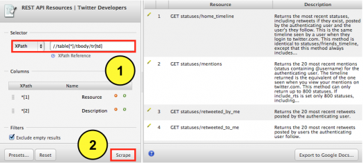

Mehrere Datentabellen mit XPath exportieren
Vor einiger Zeit habe ich die Google Chrome Extension Scraper vorgestellt. Damit lassen sich Datentabellen aus HTML Webseiten direkt in ein Google Spreadsheet exportieren. Heute zeige ich wie man direkt mehrere Datentabellen aus einer Webseite mit Scraper exportiert. Für die Übung habe ich mir Twitters Entwicklerseite ausgesucht, da man dort direkt mehrere Datentabellen (hier rot umrahmt) hintereinander findet. Ich markiere die ersten drei Zeilen der ersten Tabelle und klicke auf die rechte Maustaste. Dort wähle ich aus dem Menü die Option Scrape similar aus. Scraper selektiert nun automatisch alle nachfolgenden Zeilen, die zur Tabelle gehören.

Und so sieht das Ergebnis aus. Sollte das Ausgabefenster leer sein, genügt ein Klick auf die rechte Maustaste und die Auswahl der Option Neu laden, um das Ergebnis sichtbar zu machen.

Auf der rechten Seite sieht man jetzt alle abgetragenen Datenzeilen der ersten Tabelle. Da wir aber alle Tabellen auf der Webseite abtragen wollen, wenden wir unseren Blick nach Links auf die Eingabemaske “XPath“, die folgende Befehlszeile enthält: //table[1]/tbody/tr[td]
Aka.: Scrape alle Datenzeilen, die zu der ersten Tabelle gehören. Ich ersetze die 1, die hier für die erste Tabelle steht, durch ein * und klicke anschließend auf Scrape. Das * hebt die Selektion auf die erste Tabelle auf und greift nun beim Scrapen auf alle Tabellen zu. Auf der rechten Seite füllt sich nun die Voransicht mit allen verfügbaren Datenzeilen. Sollte das Ausgabefenster leer sein, genügt ein Klick auf die rechte Maustaste und die Auswahl der Option Neu laden, um das Ergebnis sichtbar zu machen.